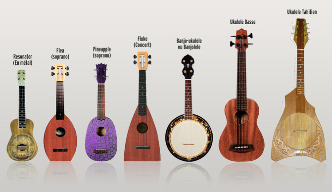

Choisissez votre taille
- Soprano (la plus répandue)
- Concert
- Ténor
- Baryton (achetez une guitare !) : on va éviter le baryton qui n'est pas accordé pareil que les trois autres tailles
N'hésitez pas à mettre quelques euros de plus dans un modèle, plutot que d'acheter un ukulélé moins cher mais dont il faudra changer les cordes (ce qui au final vous reviendra plus cher)
L'ukulélé est en forme traditionnelle, vous pouvez aussi trouvez des Flea, des Flukes et des Pineapple. Tout ça c'est ok mais essayez avant d'acheter pour voir ce que vous préférez. Si vous êtes gaucher précisez-le à l'achat et demandez à ce qu'on vous inverse les cordes.
Devant la multitude de modèles, il peut être difficile de choisir. Vous pouvez déjà faire une préselection sur internet. Ensuite libre à vous de commander sur le net ou dans votre magasin de musique préféré.
Mais un instrument, c'est sonore, alors comment je fais ?
Notez la référence de l’ukulélé que vous avez repéré et la taper dans Youtube avec les mots : référence avis / référence test. Si vous parlez anglais : reference review. Dans les vidéos, vous pourrez entendre le son de l’instrument. Et les commentaires sont souvent intéressants.
Il y a beaucoup de marques d'ukulélé. Si vous achetez en ligne chez des vendeurs spécialisés, toutes les marques qu'ils vendent sont bonnes. Si vous achetez en boutique, regardez avant ce qu'i y a sur les sites spécialisés et essayez de retrouver les mêmes marques.
Commencez déjà par votre budget. Tous les sites ou presque propose un tri par fabricant, par bois, etc. Choisissez par prix.
A moins de 50 euros, j’éviterai (sauf les Mahilele). Si un uke coûte 30 euros mais que vous devez rajouter un jeu de cordes neuf (pour remplacer les cordées déjà montées) à 10 euros, on est déjà à 40 euros. Dépensez quelques euros de plus vous évitera ce genre de désagrément.
Vérifiez aussi si la housse est comprise dans le prix. Une housse c'est toujours utile pour protéger votre instrument et pour l'emmener avec vous.
Certaines boutiques proposent des packs débutants : c'est une centaine d'euros mais vous avez l'ukulélé, la housse, l'accordeur et la méthode ainsi que le dictionnaire d'accords.
Pour l'accordeur il y a deux options : un accordeur qu'on garde avec le uke tout le temps, ou l'option numérique sur le téléphone.
L'accordeur qu'on garde avec soi. Pratique, il restera accroché à la tête de votre uke et vous pourrez vous accorder tout le temps, y compris pendant les concerts. Le principe c'est que la vibration de la corde va passer dans le manche de l'instrument et revenir dans l'accordeur. Donc même sans jouer très fort vous pourrez ajuster les notes. Certains modèles sont très discrets et très petits.
L'accordeur numérique : c'est l'option sur smartphone. Il peut rendre des services mais si vous êtes dans un environnement bryuant, le téléphone captera tous les bruits environnants et il sera difficile de vous accorder.
Pour les modèles non numériques, vérifiez bien que l'accordeur soit pour ukulélé ou qu'il soit chromatique. Ne prenez pas d'accordeur de guitare ou de basse sinon ils ne chercheront QUE les notes des cordes de la guitare et de la basse. un accordeur chromatique va reconnaître la note que vous jouez, quel que soit l’instrument.
Et surtout, faites vous plaisir ! Si vous hésitez entre plusieurs modèles, prenez celui qui vous plait le plus ! De toute façon, les joueurs d'ukulélé sont tous atteints de la même maladie : l'UAS pour Ukulele Acquisition Syndrom. Donc ce votre premier ukulélé ne sera surement pas votre dernier !